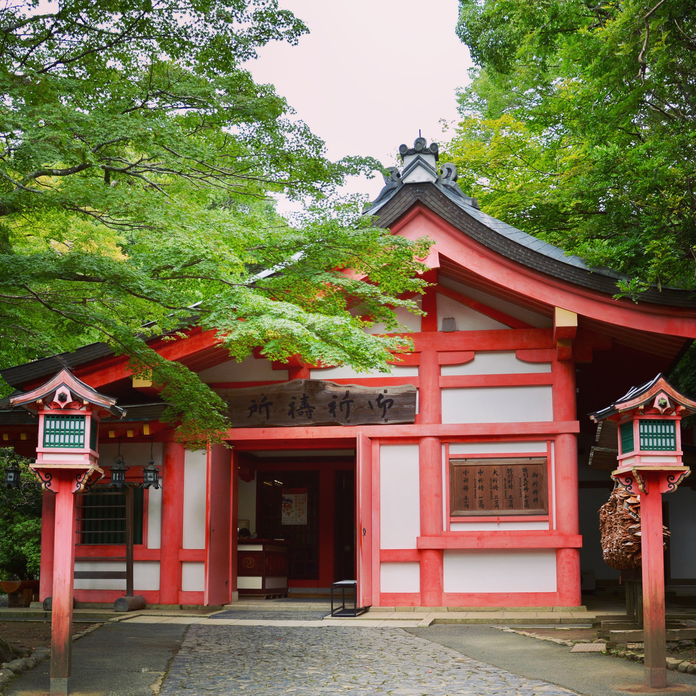
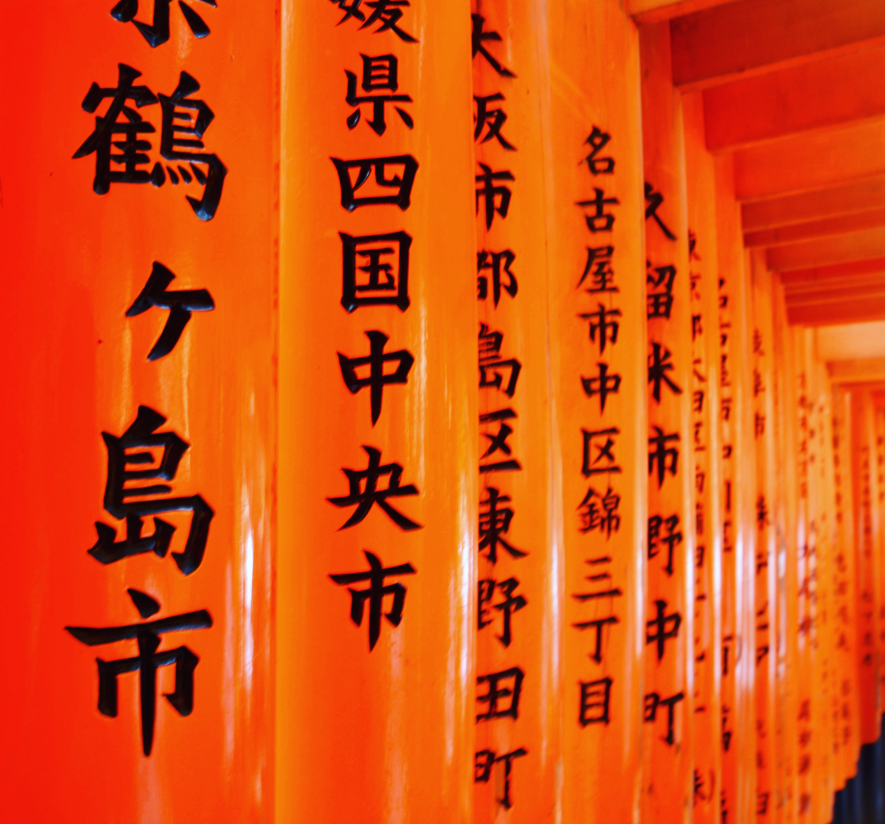

和老婆大人从日本回来之后，一直在想着要写一篇游记，又或者是攻略。在出发之前，也曾经在网上看过一些别人写的游记和攻略，然而，能找到的绝大多数都是自由行的。不可否认，如果是自由行，是非常需要有前人的经验作为参考的，比如交通住宿如何预订，餐饮如何解决，景点如何选择，路线如何设计等等。
一般人会认为跟团玩不尽兴，尤其是年轻人。 或许是被新闻媒体里报道的各种旅行团的坑爹事件所影响，又或许是之前有过一些跟团游的糟糕体验，很多人会认为，跟团么无外乎下车拍照，上车睡觉，能遇到不去购物点的团就谢天谢地了。所以如果有时间，有精力，都会选择做足功课的自由行，特别是对于去日本这样语言障碍不大、治安也好的靠谱国家。
而我们这次的出行所选择的是跟团，对于去日本，我认为以下情况可能更适合跟团出行：
对照下来我们满足了后面三种情形，所以跟团是一个不错的选择。于是第一个问题就来了，选择怎么样的团？
预订过旅游的人都知道的，同样的目的地有各多各样不同路线、不同价位、不同旅行社提供的团队游产品。怎么样可以选到一个适合自己的靠谱团呢？下面是我的选择方式，大家可以参考参考：
-选定出行时间。
所有的旅行都是越早定越便宜，但是又有多少人能准确的预测出几个月之后自己的档期呢？所以往往都选择固定的节假日比较靠谱。价格上相比平时肯定是要稍微高一些的，有一个小技巧就是可以尽量避开一点点国定假日，比如这次我们想选在中秋假期出行，于是中秋是9.15日，我们就选择提前一天的9.14日出发，对于上班的人来说这样子调整之后所需要请的年假是一样的，但是就可以略微的避开一点人多的假日，团费的价格也会优惠一些。
-确定团费预算。
如果对价格不敏感的，可以选择尽量贵一些的团，选择那些四星、五星。实际上对于三星及以下的团这里不太推荐，可以仔细研究下这类团的行程，往往比较坑爹的地方较多。就拿日本来说，同样的7天6晚，有八九千上万的团，也有四五千的，可以想象当中享受到的服务和浏览品质的差异。比较推荐的是四星的团，价格不会太高，团员人数一般也不会太多，会有比较好的出游体验。
-选择供应商。
一般来说我比较相信携程自己的团，这里要特别强调一点的是并不是在携程上挑选的旅行产品就是携程自己运营的，很多第三方旅行社也会把自己的旅行产品挂在携程销售，所以在选择的时候最好可以关注一下供应商。如果同样的价位和行程，最好就选择供应商就是携程自己的团队，一般来说领队比较负责，行程也基本上不会有变动，其它供应商就不能保证了，而且选择携程自己的团万一出现纠纷直接找携程评理也方便一些。
-对比不同产品的差异：交通、路线、食宿。
这一步是必不可少的，虽然看似无脑跟团，但是自己想要去哪几个地方，住什么样水准的酒店，有多少顿团餐，有多少顿是要自己解决的，这些都是需要弄清楚的，这也是不同旅行产品之间的除了价格之外的最大差异。
-查看往期评价。
挑选到适合自己口味的旅行团之后，还必须要做的就是查看这个团往期的评价。比如有些团看似很不错，但是评价不好，比如有随意变更线路，增加购物点，住宿和想象有差距等等，这些信息都可以从以往参加过同样的团的人的评价中获得。而且特别要关注那些有中评，差评，也就是一星、两星评价的人的内容，不能总是盯着好的评价看。
-模拟团队行程做一份简单的自由行攻略，对比价格差异。
最后的一步，就是参考自己选定的团队游，自己做一份简单的自由行攻略，说是攻略其实就是一个很粗的价格对比，只需要对比一下自己预订相同航班，相同酒店的价格是多少，自己解决这么多天的吃饭问题大致需要花多少，自己在日本国内的交通大致需要花多少，把这些所有的加起来和团费对比看一看，有没有很大的出入就可以了。
通过以上条件筛选下来，基本上可以得到比较满足自己需求的团队游产品了。最后我们选择的是下面这个团：
这个团的亮点主要是除了奥特莱斯没有其它购物景点，有两日自由行可以自己安排，住宿除了一晚温泉酒店外全是五星酒店，路线包含日本关东关西主要景点。
选定付钱之后，还需要自己做的事情就是准备好签证材料，然后只要等到航班出发的日期时间准时到机场集合就行了，确实省心省力。我们这个团最终只有二十个人左右，也算是相对比较高端的团，团友的素质虽然参差不齐，但并没有很让人讨厌的人，包括我们在内有一共有四对情侣，四对母女，一对闺蜜和一家带小朋友的四口。
接下来就是七天六晚愉快的玩耍啦，总的路线是从大阪开始，途径奈良、京都、名古屋、富士山，最后抵达东京。下面是简单流水账似游记，有兴趣的小伙伴可以继续往下看。
第一天
我们是下午的航班，日本航空JL894，当地时间下午五点左右到达的是大阪关西机场，随后就有地接导游领着上了大巴，驱车一个小时到达当天下榻酒店「神户波多比亚（海港）大酒店」。这个酒店的位置相当比较偏远了，在神户机场附近的一个人工小岛上，优点就是房间大，这样的房间在日本的酒店里绝对算是豪宅了：
到酒店已经天黑了，有一些团友貌似还是乘小电车去神户市中心三宫去玩了，我们还是以休息为主，由于也不太讲究吃的，所以直接在酒店附近的便利店了买了泡面当晚饭吃。
第二天
这一天是自由活动，没有安排行程。一般第一次到大阪的可以选择去心斋桥买买买，也可以去逛逛环球影城。我们的旅游大巴会一早把我们放在心斋桥，晚上再来接我们回神户的酒店，这正好符合我们的需求，省的自己研究怎么样从酒店去心斋桥了。而另一部分选择去环球影城的团友就只能自己出行了。
心斋桥是大阪最大的购物区，集中了很多专卖店、药妆店和精品屋，几乎是中国游客到大阪必来的地方。我们此行还带着给同事朋友采购药妆的任务，听说大阪这里的东西比东京全，而且价格也低一些，于是就决定在心斋桥买一天。最后实在是拎不动了，还顺便买了个行李箱。
当中逛的过程中走累了可以在星巴克休息，这里推荐不要去心斋桥道乐蟹「很多团友的午餐选择」边上的那家，人太多了，可以去心斋桥筋另一边地下商街的那家，人少有座。
逛完买爽之后，七点半大巴准时接我们回酒店，非常顺利的一天，基本上达成了目的。
第三天
这一天是行程最赶也是景点最多的一天，我们要从大阪玩到奈良，再经过京都，最后在晚上入住名古屋的威斯丁城堡酒店。第一个景点是大阪城公园，位于大阪的中央，园内的标志性景观是大阪城天守阁。
匆匆一瞥之后，前往奈良。游览东大寺，神鹿公园和春日大社。东大寺就位于奈良公园北侧，于728年由信奉佛教的圣武天皇建立，世界文化遗产。东大寺的大佛殿是世界最大的木造古建筑，殿内供奉的一尊16米高的卢舍那佛像，是世界最大的青铜佛像。值得一提的是，绕着佛像走一圈，会看到一根木柱底部有一个洞，被称为「佛祖的鼻子」，据说如果能够从其中穿过，就能得到平安喜乐。我尝试了一下，有点难度，差一点卡住，最后还是钻过去了。
由于东大寺和奈良神鹿公园距离很近，所以在走进东大寺的路上或在东大寺中散步时，到处都能看到悠然自得的鹿，可以买点鹿饼来喂给它们吃，150日元一份。
在奈良的最后一处是春日大社。上面的东大寺是佛教场馆，而春日大社是日本神道教的参拜场所，建立于710年，也已经列入世界文化遗产名录，供奉的是藤原家的四位守护神。春日大社的特点是献灯特别多，在参道两边全是密密麻麻的石灯笼，都是信男信女们布施捐建的。这些石灯笼上爬满了青苔，很有一番古意和禅意。
在奈良公园简单的吃了团餐之后，我们就驱车前往京都了，迎接我们的首先是伏见稻荷大社，位于京都南边伏见的一座神社，供奉着保佑商业繁荣、五谷丰收的农业之神稻荷。这里最著名的就是神社主殿后面密集的朱红色「千本鸟居」，是京都的代表性景观之一。狐狸脸形的绘马是这里的一个特色，给小狐狸画上表情很是有趣。


离开稻荷神社之后，来到的是京都老街二年坂、三年坂和清水坂。这一带的道路两侧都建有木质结构的老房子，开设了饼屋、纪念品商店、京都特产店、茶屋和咖啡馆等。在这里经常能看到身着和服的男男女女，你可不要以为是遇见了传统的日本人，100%是游客打扮的，因为在这里很多旅行团会赠送和服体验项目。
结束了京都老街散策之后，这一天的行程也算是赶完了。出发前想过行程可能比较紧张，但实际节奏比想象的还要快。毕竟一天三个城市，四五个景点，所以用走马观花来形容这一天一点都不为过。行程的目的也是达到的，知道下回如果有机会自己过来的话，哪些地方值得慢慢体味。目前看来在奈良和京都起码可以各玩一整天。
晚上下榻的是名古屋城对面的威斯丁城堡酒店，五星大堂，四星的服务，三星的房间，酒店家具比较老气，离繁华的名古屋市区较远。此行名古屋只是经停，所以并无游览项目。
第四天
这一天的行程和原定的略有不同，上午直接去的御殿场奥特莱斯，下午去的富士山五合目。御殿场奥特莱斯是日本最大的名牌折扣店，是很多海外游客日本之旅的必经之地。由于只有两个小时的购物时间，所以买的并不尽兴。虽然大多数的品牌，尤其是欧美品牌并不一定比去欧洲划算，甚至不如代购的给力，但是相比国内还是非常不错的。对于喜欢Shopping的人来说，在这里逛一天也不为过。
从奥特莱斯出来，先去的是地震体验馆。通过体验模拟的地震摇晃来提高对地震知识的了解，展示地震的历史资料。这个景点第一次有了一点店坑爹的感觉，因为在体验馆边上就是一个纪念品商店，店里卖的东西价格不实在，服务员也全是中国人，会主动招揽生意的那种，体验比较糟糕。好在地震体验馆的吉祥物还是挺可爱的。
富士山五合目则位于富士山的半山腰，富士山从山脚到山顶，共划分为10个阶段，每一个阶段是一个「合目」，山顶称「十合目」，巴士最高可以到达2305米的「五合目」。从奥特莱斯出来的时候穿的是短袖，到了这里发现指挥交通的工作人员穿的都是羽绒服，一下车果然寒意扑面而来，感叹应该把刚刚在奥莱买的卫衣穿着下车游览的。
这一晚入住的是河口湖富士之馆温泉酒店，身处深山老林，外面没有半个人，我们俩对温泉也不感兴趣，所以并没有什么特别的体验，就是一个日本乡下的小旅馆的感觉。
第五天
这一天富士山附近天气不好，第一个景点安排的是平和公园远眺富士山，结果在烟雨朦胧中啥也没看着。随后就直接驱车前往东京了。在东京游览了皇居广场、浅草寺和台场。
皇居就是天皇的住所，皇居广场的特色观景点是二重桥，横跨内护城河，是公认的日本标志。二重桥是通向皇宫的特别通道，有皇宫护卫仪仗队把守，桥下的护城河是皇居最美的地方，水面倒映着二重桥，桥洞长满了苔藓，有一丝别样的历史感和宁静感。
浅草寺是东京历史最悠久、人气最旺的寺院，供奉的本尊是圣观音。浅草寺的象征是入口处的风神雷门，门内是通往寺庙广场的仲见世商业街，随后来到浅草寺的主广场会看到巨大的香炉，很多人往自己身上扇烟，以庇护健康。
台场位于东京湾的人造陆地上，是东京最新的休闲娱乐和购物区，很受年轻人喜爱，在这里可以呆一整天休闲，购物，品尝美食。这里有台场海滨公园、维纳斯中心、DivercCity购物城、1:1高达等。
这一晚入住的是东京京王广场酒店，位置很好，离新宿商业区可谓零距离，晚上在酒店附近兜兜也能有不少收获。
第六天
又是一天的自由活动，这一天的任务依旧是买买买，需要给家人和自己采购一天的东西，特地回了一趟浅草，其他的都在酒店附近的新宿商业区搞定，相比前几天一直跟着导游跑景点，这一天的确是比较轻松的一天。只是日本的商店关门较早，所以晚上8点以后基本上除了夜场也没有什么别的活动了，还是选择在酒店早点休息。
第七天
不知道怎么多出来一个综合免税店的地方，这是第二次感觉有点坑爹的地方。同样的全是中国服务员，同样的会主动招揽生意推销东西，价格相比外面也是要贵一些，都是卖给中国游客的，北海道马油、洗衣球、保温杯、赭石首饰等等。再之后就去了一下秋叶原，由于要买的东西都已经买到了，所以在秋叶原只是随便逛了一逛，啥也没有购买。
之后就早早的去机场了，还是机场的免税店逛起来比较有意思一点，在这时买一些吃的特产也特别方便，特别是没去北海道也能买到北海道限定的特产白色恋人和薯条三兄弟。
最后搭乘日本航空JL879航班回国，由于当天天气不好，赶上台风登陆日本，在登机后在飞机上硬坐了三个小时才等到一个风雨略小的时机起飞，一度担心当天回不了家，幸好还是在半夜12点左右顺利落地浦东，结束了这一趟日本之行。
结束前再稍微总结一下，这篇文章主要是和大家探讨一下去日本这样的国家跟团应该怎么玩，比如哪些人适合跟团，怎么样挑选适合自己又靠谱的旅行团等等，并且简单的分享了自己这次出游的一些浅薄的见识。关于自己对于日本文化和日本人的理解，之后会另外再写一篇文章来表达，目前还处在观点整理和资料收集阶段，敬请关注。